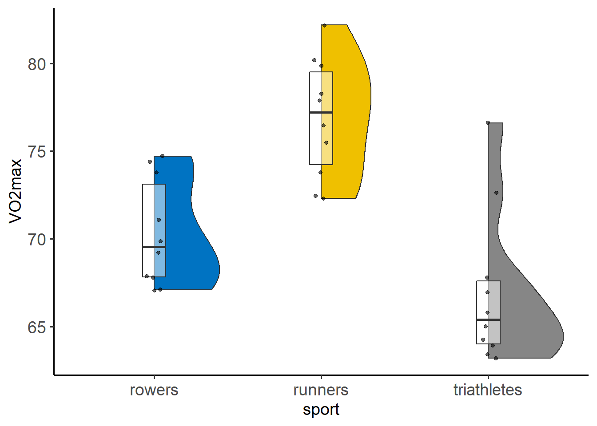

library(rstatix)
library(PupillometryR)
library(gtsummary)
library(here)
library(tidyverse)22 Kruskal-Wallis test
The Kruskal-Wallis test is a rank-based non-parametric alternative to the one-way ANOVA and an extension of the Wilcoxon-Mann-Whitney test to allow the comparison of more than two independent groups. It’s usually recommended when the assumptions of one-way ANOVA test are not met (non-normal distributions) or with small samples.
When we have finished this Chapter, we should be able to:
22.1 Research question and Hypothesis Testing
We consider the data in dataVO2 dataset. We wish to compare the VO2max in three different sports (runners, rowers, and triathletes).
NOTE: The Kruskal-Wallis test should be regarded as a test of dominance between distributions comparing the mean ranks. The null hypothesis is that the observations from one group do not tend to have a higher or lower ranking than observations from the other groups. This test does not test the medians of the data as is commonly thought, it tests the whole distribution. However, if the distributions of the two groups have similar shapes, the Kruskal-Wallis test can be used to determine whether there are differences in the medians in the two groups. In practice, we use the medians to present the results.
22.2 Packages we need
We need to load the following packages:
22.3 Preraring the data
We import the data dataVO2 in R:
library(readxl)
dataVO2 <- read_excel(here("data", "dataVO2.xlsx"))We inspect the data and the type of variables:
glimpse(dataVO2)Rows: 30
Columns: 2
$ sport <chr> "runners", "runners", "runners", "runners", "runners", "runners…
$ VO2max <dbl> 73.8, 79.9, 75.5, 72.5, 82.2, 78.3, 77.9, 76.5, 72.3, 80.2, 71.…The dataset dataVO2 has 30 participants and two variables. The numeric VO2max variable and the sport variable (with levels “roweres”, “runners”, and “triathletes”) which should be converted to a factor variable using the factor() function as follows:
dataVO2 <- dataVO2 %>%
mutate(sport = factor(sport))
glimpse(dataVO2)Rows: 30
Columns: 2
$ sport <fct> runners, runners, runners, runners, runners, runners, runners, …
$ VO2max <dbl> 73.8, 79.9, 75.5, 72.5, 82.2, 78.3, 77.9, 76.5, 72.3, 80.2, 71.…22.4 Explore the characteristics of distribution for each group and check for normality
The distributions can be explored visually with appropriate plots. Additionally, summary statistics and significance tests to check for normality (e.g., Shapiro-Wilk test) can be used.
Graph
We can visualize the distribution of VO2max for the three sport groups:
set.seed(123)
ggplot(dataVO2, aes(x=sport, y=VO2max)) +
geom_flat_violin(aes(fill = sport), scale = "count") +
geom_boxplot(width = 0.14, outlier.shape = NA, alpha = 0.5) +
geom_point(position = position_jitter(width = 0.05),
size = 1.2, alpha = 0.6) +
ggsci::scale_fill_jco() +
theme_classic(base_size = 14) +
theme(legend.position="none",
axis.text = element_text(size = 14))
The above figure shows that the data in triathletes group have some outliers. Additionally, we can observe that the runners group seems to have the largest VO2max.
Summary statistics
The VO2max summary statistics for each sport group are:
Summary statistics by group
VO2_summary <- dataVO2 %>%
group_by(sport) %>%
dplyr::summarise(
n = n(),
na = sum(is.na(VO2max)),
min = min(VO2max, na.rm = TRUE),
q1 = quantile(VO2max, 0.25, na.rm = TRUE),
median = quantile(VO2max, 0.5, na.rm = TRUE),
q3 = quantile(VO2max, 0.75, na.rm = TRUE),
max = max(VO2max, na.rm = TRUE),
mean = mean(VO2max, na.rm = TRUE),
sd = sd(VO2max, na.rm = TRUE),
skewness = EnvStats::skewness(VO2max, na.rm = TRUE),
kurtosis= EnvStats::kurtosis(VO2max, na.rm = TRUE)
) %>%
ungroup()
VO2_summary# A tibble: 3 × 12
sport n na min q1 median q3 max mean sd skewness kurtosis
<fct> <int> <int> <dbl> <dbl> <dbl> <dbl> <dbl> <dbl> <dbl> <dbl> <dbl>
1 rowe… 10 0 67.1 67.8 69.6 73.1 74.7 70.3 3.04 0.502 -1.53
2 runn… 10 0 72.3 74.2 77.2 79.5 82.2 76.9 3.39 -0.00950 -1.16
3 tria… 10 0 63.2 64 65.4 67.6 76.6 67.0 4.40 1.51 1.60dataVO2 %>%
group_by(sport) %>%
dlookr::describe(VO2max) %>%
select(described_variables, sport, n, na, mean, sd, p25, p50, p75, skewness, kurtosis) %>%
ungroup()# A tibble: 3 × 11
described_variables sport n na mean sd p25 p50 p75 skewness
<chr> <fct> <int> <int> <dbl> <dbl> <dbl> <dbl> <dbl> <dbl>
1 VO2max rowers 10 0 70.3 3.04 67.8 69.6 73.1 0.502
2 VO2max runners 10 0 76.9 3.39 74.2 77.2 79.5 -0.00950
3 VO2max triath… 10 0 67.0 4.40 64 65.4 67.6 1.51
# ℹ 1 more variable: kurtosis <dbl>The sample size is relative small (10 observations in each group). Moreover, the skewness (1.5) and the (excess) kurtosis (1.6) for the triathletes fall outside of the acceptable range of [-1, 1] indicating right-skewed and leptokurtic distribution.
Normality test
The Shapiro-Wilk test for normality for each sport group is:
dataVO2 %>%
group_by(sport) %>%
shapiro_test(VO2max) %>%
ungroup()# A tibble: 3 × 4
sport variable statistic p
<fct> <chr> <dbl> <dbl>
1 rowers VO2max 0.865 0.0872
2 runners VO2max 0.954 0.712
3 triathletes VO2max 0.816 0.0229We can see that the data for the triathletes is not normally distributed (p=0.023 <0.05) according to the Shapiro-Wilk test.
By considering all of the information together (small samples, graphs, normality test) the overall decision is against of normality.
22.5 Run the Kruskal-Wallis test
Now, we will perform a Kruskal-Wallis test to compare the VO2max in three sports.
Kruskal-Wallis test
kruskal.test(VO2max ~ sport, data = dataVO2)
Kruskal-Wallis rank sum test
data: VO2max by sport
Kruskal-Wallis chi-squared = 16.351, df = 2, p-value = 0.0002815dataVO2 %>%
kruskal_test(VO2max ~ sport)# A tibble: 1 × 6
.y. n statistic df p method
* <chr> <int> <dbl> <int> <dbl> <chr>
1 VO2max 30 16.4 2 0.000281 Kruskal-WallisThe p-value (<0.001) is lower than 0.05. There is at least one sport in which the VO2max is different from the others.
Present the results in a summary table
A summary table can also be presented:
Show the code
gt_sum10 <- dataVO2 %>%
tbl_summary(
by = sport,
statistic = VO2max ~ "{median} ({p25}, {p75})",
digits = list(everything() ~ 1),
label = list(VO2max ~ "VO2max (mL/kg/min)"),
missing = c("no")) %>%
add_p(test = VO2max ~ "kruskal.test", purrr::partial(style_pvalue, digits = 2)) %>%
as_gt()
gt_sum10| Characteristic | rowers, N = 101 | runners, N = 101 | triathletes, N = 101 | p-value2 |
|---|---|---|---|---|
| VO2max (mL/kg/min) | 69.6 (67.8, 73.1) | 77.2 (74.2, 79.5) | 65.4 (64.0, 67.6) | <0.001 |
| 1 Median (IQR) | ||||
| 2 Kruskal-Wallis rank sum test | ||||
22.6 Post-hoc tests
A significant WMW is generally followed up by post-hoc tests to perform multiple pairwise comparisons between groups:
Post-hoc tests
# Pairwise comparisons
pwc_Dunn <- dataVO2 %>%
dunn_test(VO2max ~ sport, p.adjust.method = "bonferroni")
pwc_Dunn # A tibble: 3 × 9
.y. group1 group2 n1 n2 statistic p p.adj p.adj.signif
* <chr> <chr> <chr> <int> <int> <dbl> <dbl> <dbl> <chr>
1 VO2max rowers runners 10 10 2.43 1.52e-2 4.57e-2 *
2 VO2max rowers triathletes 10 10 -1.59 1.12e-1 3.37e-1 ns
3 VO2max runners triathletes 10 10 -4.01 5.96e-5 1.79e-4 *** Alternatively, we can perform pairwise comparisons using pairwise WMW’s test and calculate the adjusted p-values using Bonferroni correction:
# Pairwise comparisons
pwc_BW <- dataVO2 %>%
pairwise_wilcox_test(VO2max ~ sport, p.adjust.method = "bonferroni")
pwc_BW# A tibble: 3 × 9
.y. group1 group2 n1 n2 statistic p p.adj p.adj.signif
* <chr> <chr> <chr> <int> <int> <dbl> <dbl> <dbl> <chr>
1 VO2max rowers runners 10 10 8.5 0.002 0.006 **
2 VO2max rowers triathletes 10 10 80.5 0.023 0.07 ns
3 VO2max runners triathletes 10 10 93 0.000487 0.001 ** Dunn’s pairwise comparisons were carried out using the method of Bonferroni and adjusting the p-values were calculated.
The runners’ VO2max (median= 77.2, IQR=[74.2, 79.5] mL/kg/min) seems to differ significantly (larger based on the medians) from rowers (69.6 [67.8, 73.1] mL/kg/min, p=0.046 <0.05) and triathletes (65.4 [64.0, 67.6] mL/kg/min, p <0.001).